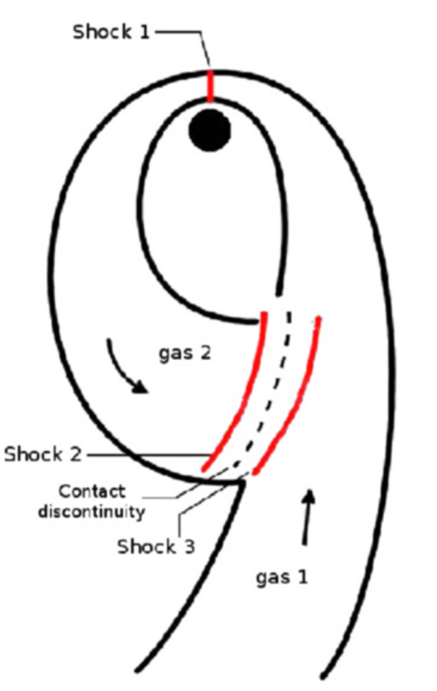
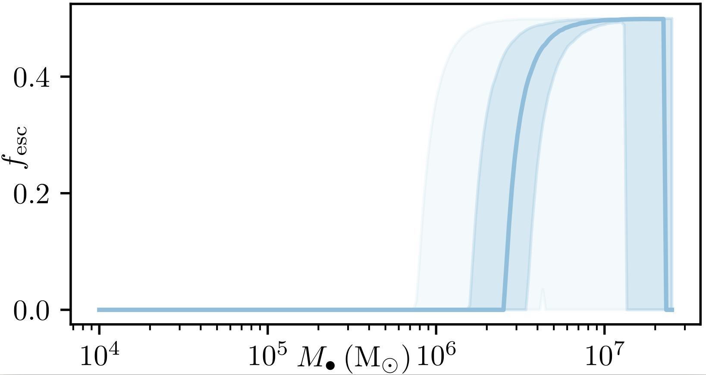

Tidal disruption events (TDEs) begin when a star is torn apart by the tidal forces from a supermassive black hole (SMBH). Approximately half of the star will remain bound, and come back for another round...
 From Rees (1988).
From Rees (1988).
TDEs are farily interesting, not just because of the shear, visceral process of ripping apart a star, but also because they might help us learn about previously unstudied black holes. Most quasi-steadily accreting black holes have masses in the ~106-109 M☉ range (citation?). However, SMBHs with masses greater than about ~3x107 M☉ will instead swallow many stars whole. TDEs might light up otherwise quiescent galaxies, offering us a window through which to view the lower-mass portion of the supermassive black hole populaiton.
General relativistic GR precession causes the falling-back gas to hit itself. This should emit light and help the returning material form a disk. As I'll show later, this can also drive outflows if the shock is strong enough.

From Piran et al. (2015), adapted from Shiokawa et al. (2015).
As matter from disrupted stars falls back again towards the disruptive SMBH, general relativistic apsidal precession will cause the stream to precess, and as material flys again away from the SMBH it will collide with still-infalling matter. The resulting shock could produce substantial optical emission (citation). Additionally, for some SMBH masses, the shock should occur at very high speeds, unbinding a decent amount of matter; the unbound outflow might be able to reprocess x-ray emitted by the subsequently-forming accretion disk into the lightcurves observed by optical surveys (citations).
Here is a simulation of one of these TDE stream self-intersections, illustrating the resulting outflow and accretion disk. This was a disruption of a solar-mass star by a 106 M☉ SMBH.
 This simulation was perfomed by a GRAD-MAP summer student, Fraol Kebede.
This simulation was perfomed by a GRAD-MAP summer student, Fraol Kebede.
Some text will go here.
Some text will go here.

Some text will go here.